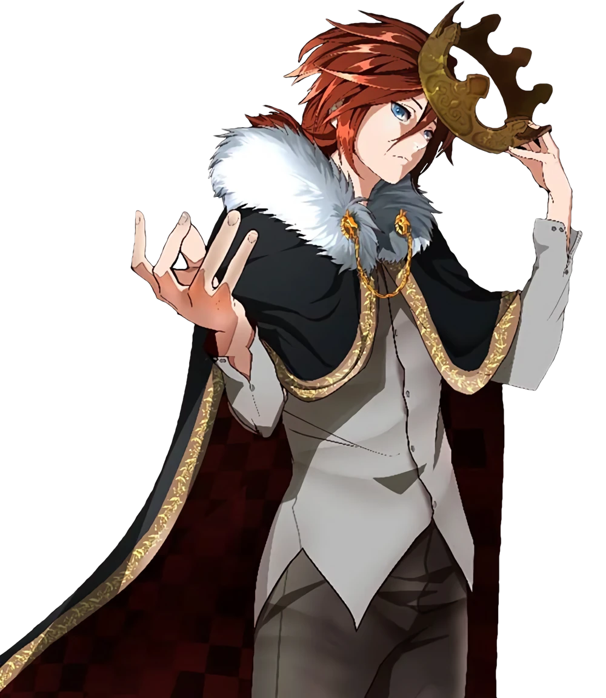
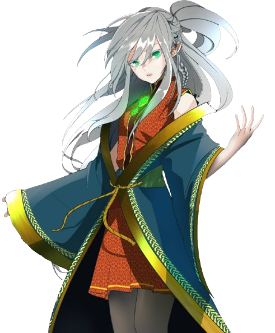
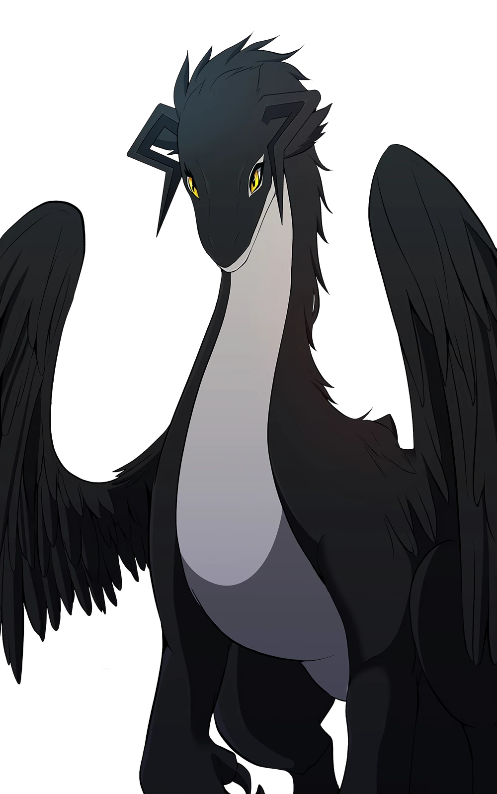
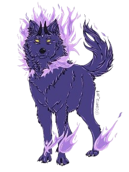
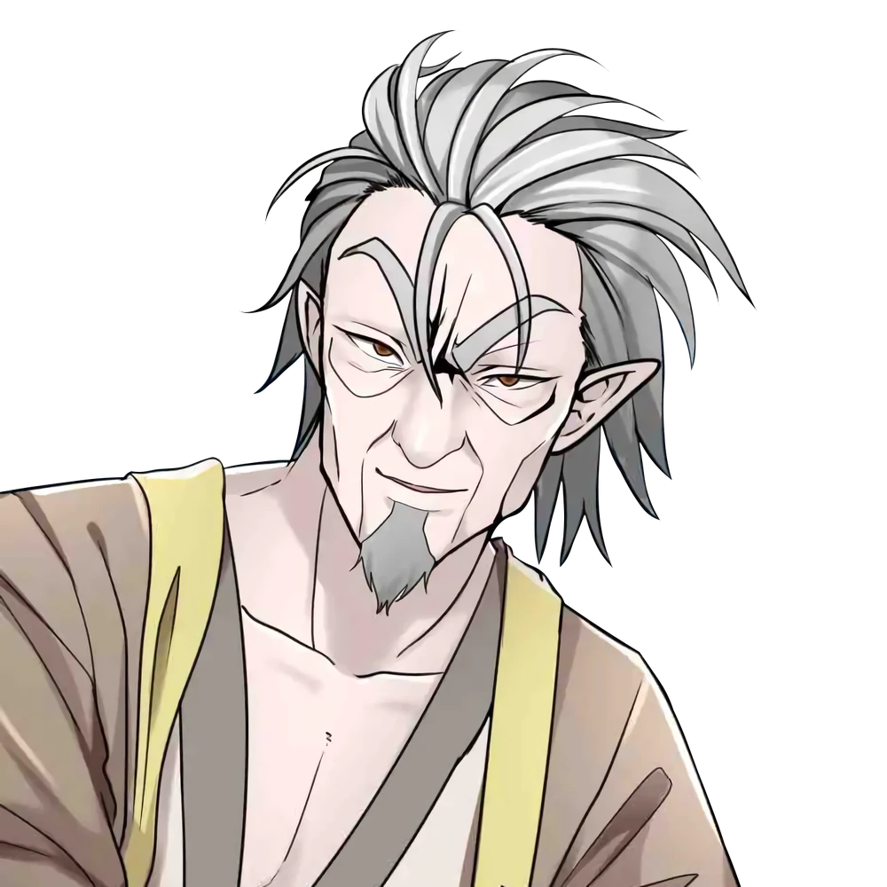
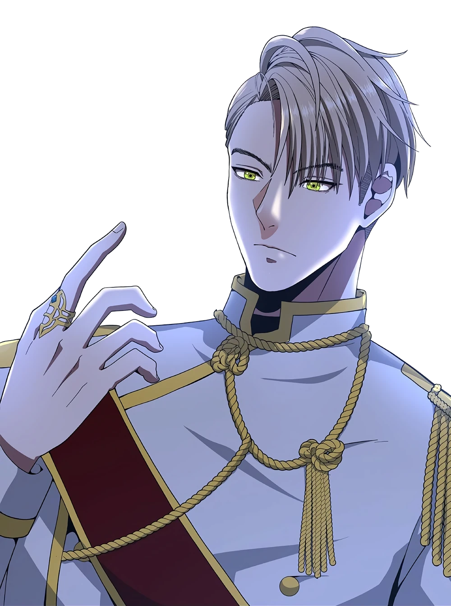

Arthur Leywin
Protagonista da obra e reencarnação do Rei Grey.

Protagonista da obra e reencarnação do Rei Grey.

Princesa dos elfos e amiga de infância de Arthur.

Companheira de Arthur e filha de Sylvia.

Arma senciente criada através do Éter.

Antigo rei dos elfos e mentor de Arthur.

Uma das Lanças mais poderosas de Dicathen.